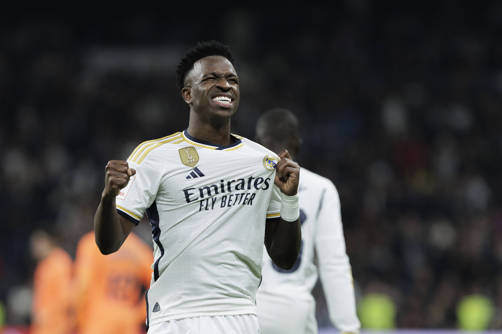
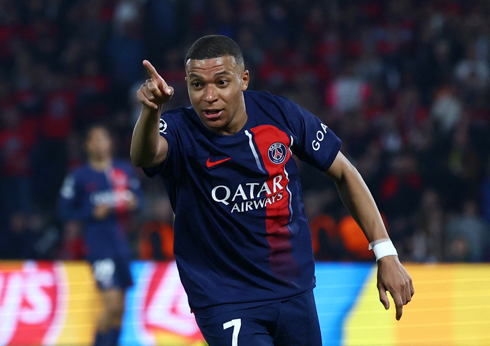

Article 1: Vinícius Jr career

Vinícius Júnior's Career (2017-2023)
2017-2018: Flamengo
Debut and Early Career: Vinícius Júnior began his professional career with Flamengo in the Brazilian
Série A. He made his senior debut on May 13, 2017, shortly after his 17th birthday.
Performances: Despite his youth, he showed immense promise with his dribbling skills, speed, and
flair. He made 37 appearances, scoring 7 goals during his time at Flamengo.
Transfer to Real Madrid: In May 2017, Real Madrid signed Vinícius for €46 million, with the transfer
becoming effective in July 2018 after he turned 18. This was a record fee for a U-18 player.
2018-2023: Real Madrid
2019-2020 Season
Continued Development: Vinícius continued to grow, contributing important goals and assists. He
scored a crucial goal against Barcelona in a 2-0 win in March 2020, becoming the youngest goal
scorer in El Clásico in the 21st century.
La Liga Title: Vinícius played a part in Real Madrid's La Liga title win, their first since 2017.
2020-2021 Season
Ups and Downs: The season was challenging with mixed performances. He scored a notable goal against
Liverpool in the Champions League quarter-finals, helping Madrid advance to the semi-finals.
Consistency Issues: Despite his talent, Vinícius struggled with consistency and finishing, which was
a point of criticism.
2021-2022 Season
Breakout Year: This season marked Vinícius Júnior's breakout, where he became one of Real Madrid’s
most important players.
Champions League Success: Vinícius scored the winning goal in the Champions League final against
Liverpool, securing Real Madrid's 14th European title. He finished the tournament with four goals
and numerous assists.
La Liga Performance: He formed a formidable partnership with Karim Benzema, contributing 17 goals
and 10 assists in La Liga as Real Madrid won the title.
Recognition: His performances earned him a place in the UEFA Champions League Team of the Season and
widespread recognition as one of the best young talents in the world.
Summary.To read more Click here
Article 2: Mbappé Career

Kylian Mbappé's Career (2020-2023)
2020-2021 Season
Paris Saint-Germain (PSG)
Domestic Competitions:
Ligue 1: Mbappé had an outstanding season, finishing as the league's top scorer with 27 goals.
Despite his efforts, PSG finished second behind Lille.
Coupe de France: PSG won the Coupe de France, with Mbappé playing a crucial role, including scoring
in the final against AS Monaco.
Trophée des Champions: PSG also secured the Trophée des Champions, with Mbappé contributing
significantly in the domestic cup competitions.
European Competitions:
UEFA Champions League: Mbappé was instrumental in PSG’s campaign, notably scoring a hat-trick
against Barcelona in the Round of 16 at Camp Nou. PSG reached the semi-finals but were eliminated by
Manchester City.
Individual Achievements:
Mbappé's performances earned him a place in the UEFA Champions League Squad of the Season and he was
widely regarded as one of the best players in the world during this period.
2021-2022 Season
Paris Saint-Germain (PSG)
Domestic Competitions:
Ligue 1: Mbappé continued his dominance in the French league, finishing as the top scorer once again
with 28 goals, and contributing numerous assists. PSG reclaimed the Ligue 1 title.
Coupe de France: PSG was unexpectedly eliminated early in the competition, which was a rare setback
domestically.
European Competitions:
UEFA Champions League: Mbappé had another strong Champions League season. He scored crucial goals,
including a memorable late winner against Real Madrid in the Round of 16 first leg. However, PSG was
knocked out in the Round of 16 by Real Madrid after a dramatic second-leg comeback.
Individual Achievements:
Mbappé was named the Ligue 1 Player of the Year, highlighting his influence and exceptional
performance throughout the season.
2022-2023 Season
Paris Saint-Germain (PSG)
Domestic Competitions:
Ligue 1: Mbappé remained a key figure for PSG, helping the team secure another Ligue 1 title. He
finished as the league’s top scorer for the fifth consecutive season, showcasing his consistency and
goal-scoring prowess.
Coupe de France: PSG again faced disappointment, being eliminated earlier than expected in the
tournament.
European Competitions:
UEFA Champions League: Mbappé continued to deliver in the Champions League, scoring important goals
during the group stage and knockout rounds. PSG advanced to the quarter-finals but was eliminated by
Bayern Munich.
World Cup 2022 (Qatar):
Individual Performance: Mbappé had a historic World Cup, scoring eight goals and winning the Golden
Boot as the tournament’s top scorer. His performances included a hat-trick in the final against
Argentina.
Team Performance: Despite his efforts, France lost to Argentina in a dramatic final decided by
penalties. Mbappé's contributions were pivotal throughout the tournament, reaffirming his status as
one of the world’s best players.
Individual Achievements:
Mbappé’s consistent performance earned him numerous accolades, including being named in the FIFA
World Cup Dream Team. His status as a global football superstar was further solidified.. To read
more click here
Article 3: Mbappe Vs Vinicious Jr International career
This is my 4th article and in the article we will talk about the differences between both Mbappes and
Vinicious Juniors internation career.Comparison
Impact and Development
Mbappé: By 2018, Mbappé was already making headlines as a teenage sensation, and by 2022, he had
cemented his place as a global superstar, demonstrating consistency and an ability to perform on the
biggest stages.
Vini Jr.: Vinícius Júnior, not part of the 2018 World Cup, emerged as a crucial player for Brazil by
2022. His development at Real Madrid translated into significant contributions for the national
team, although he did not have as profound an impact as Mbappé.
Achievements
Mbappé: His trajectory includes a World Cup victory in 2018, a historic hat-trick in the 2022 final,
and multiple individual awards, showcasing his rapid rise and sustained excellence.
Vini Jr.: While he didn't achieve the same level of team success as Mbappé in World Cups, Vini Jr.'s
progression from a young talent to a key player for Brazil by 2022 is notable.To read more click
here